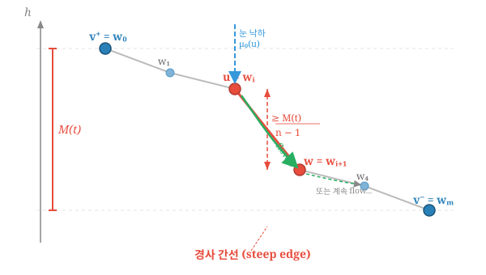
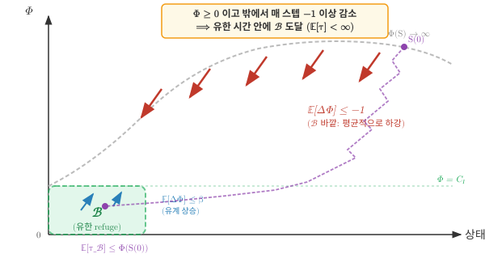
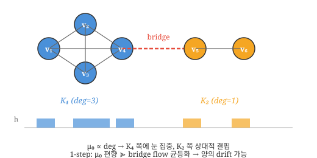

연구 ▷ HST ▷ 눈이 많이 쌓이면 그래프 구조만 반영
1. 논문 기호 정리 (Notation Reference)
그래프 기본
| 기호 | 의미 |
|---|---|
| \(\mathcal{G} = (V, \mathbf{E}, \mathbf{W})\) | 가중 그래프 |
| \(V = \{1, 2, \ldots, n\}\) | 노드 집합 (\(n = \|V\|\)) |
| \(\mathcal{E}\) | 간선 집합: \(\{(v_i, v_j) : v_i \leftrightarrow v_j\}\) |
| \(\mathbf{E}\) | \(n \times n\) 인접 행렬 (\(E_{ij} = 1\) if \((v_i, v_j) \in \mathcal{E}\)) |
| \(\mathbf{W}\) | \(n \times n\) 가중치 행렬 (\(0 \leq W_{ij} \leq 1\)) |
| \(v_i\) | \(i\)번째 노드 |
| \(N_i\) | \(v_i\)의 이웃 집합: \(\{j : (v_i, v_j) \in \mathcal{E}\}\) |
| \(\deg(v_i)\) | \(v_i\)의 차수 (\(= \|N_i\|\)) |
| \(\deg^-(v)\) | 내차수 (in-degree): \(\sum_{u \in V} w(u, v)\) |
| \(\deg^+(v)\) | 외차수 (out-degree): \(\sum_{u \in V} w(v, u)\) |
| \(n\) | 노드 수 (\(= \|V\|\)) |
초기 데이터
| 기호 | 의미 |
|---|---|
| \(y(v)\) | 노드 \(v\)에서 관측된 신호값 |
| \(\mathbf{y} = (y(v_1), \ldots, y(v_n))^\top\) | 신호 벡터 |
Heavy-Snow Process (Algorithm 1)
| 기호 | 의미 |
|---|---|
| \(h(v, t)\) | 시각 \(t\)에서 노드 \(v\)의 높이 (\(h(v, 0) := y(v)\)) |
| \(\mathbf{h}(\cdot, t) = \{h(v,t) : v \in V\}\) | 시각 \(t\)의 snowy ground (높이 벡터) |
| \(b\) | 업데이트 양 (눈의 양, \(b > 0\)) |
| \(T_{max}\) | 최대 연속 flow 횟수 |
| \(\boldsymbol{\mu}_0\) | 초기 낙하 분포 (\(\mu_0(v_i) \propto \deg(v_i)\)) |
| \(X_t\) | 시각 \(t\)에서 눈이 존재하는 노드 인덱스 |
| \(Z(t)\) | 연속 flow 카운터 (\(Z(t) \in \{0, 1, \ldots, T_{max}\}\)) |
| \(\mathcal{N}_i\) | \(v_i\)의 이웃 집합 |
| \(\mathcal{D}(t)\) | 하류 영역 (downstream): \(h(v_j, t-1) \leq h(v_{X_{t-1}}, t-1)\)인 이웃 |
전이 확률
| 기호 | 의미 |
|---|---|
| \(p_{\downarrow v_j}\) | \(\boldsymbol{\mu}_0\)에 의해 \(v_j\)가 선택될 확률: \(\frac{\deg(v_j)}{\sum_{k \in V} \deg(v_k)}\) |
| \(p_{t, v_i \to v_j}\) | 시각 \(t\)에서 \(v_i\)→\(v_j\) flow 확률: \(I(h(v_i,t) \geq h(v_j,t)) \frac{\deg(v_j)}{\sum_{k \in \mathcal{N}_i} \deg(v_k)}\) |
| \(p_{t, v_i \to \cdot}\) | block 확률: \(\frac{\sum_{k \notin \mathcal{D}(t)} \deg(v_k)}{\sum_{k \in \mathcal{N}_i} \deg(v_k)}\) |
Snow Distance & Snow Weight
| 기호 | 의미 |
|---|---|
| \(\operatorname{SD}_{ij}(t)\) | snow distance: \(\sqrt{\sum_{s=0}^{t}(h(v_i,s)-h(v_j,s))^2}\) |
| \(\mathbf{SD}(t)\) | Snow distance 행렬 (\(n \times n\)) |
| \(\overline{\operatorname{SD}}^2_{ij}(t) := \frac{1}{t}\operatorname{SD}^2_{ij}(t)\) | 시간 평균 snow distance (제곱) |
| \(W_{ij}(t)\) | snow weight: \(e^{-\operatorname{SD}^2_{ij}(t) / 2\theta^2}\) (\(i \neq j\), \(t > 0\)) |
| \(\mathbf{W}(t)\) | Snow weight 행렬 (\(n \times n\)) |
| \(\theta\) | 연결 강도 조절 파라미터 (Gaussian kernel) |
스펙트럼 분석 (Spectral Analysis)
| 기호 | 의미 |
|---|---|
| \(\mathbf{D}(t)\) | 차수 대각행렬: \(d_i(t) = \sum_{j=1}^n W_{ij}(t)\) |
| \(\mathbf{L}(t)\) | snow graph Laplacian: \(\mathbf{D}(t) - \mathbf{W}(t)\) |
| \(\bar{\mathbf{L}}(t)\) | 정규화 snow graph Laplacian: \(\mathbf{D}^{-1/2}(t)\,\mathbf{L}(t)\,\mathbf{D}^{-1/2}(t)\) |
| \(\lambda_j^{(t)}\) | \(\bar{\mathbf{L}}(t)\)의 \(j\)번째 고유값 (\(0 \leq \lambda_1^{(t)} \leq \cdots \leq \lambda_J^{(t)}\)) |
| \(\boldsymbol{\psi}_j^{(t)}\) | \(\lambda_j^{(t)}\)에 대응하는 정규직교 고유벡터: \((\psi_{j1}^{(t)}, \ldots, \psi_{jn}^{(t)})^\top\) |
| \(\boldsymbol{\Psi}(t)\) | 고유벡터 행렬: \([\boldsymbol{\psi}_1^{(t)}, \ldots, \boldsymbol{\psi}_J^{(t)}]\) |
| \(\boldsymbol{\Lambda}(t)\) | 고유값 대각행렬: \(\text{diag}(\lambda_1^{(t)}, \ldots, \lambda_J^{(t)})\) |
| \(\bar{y}(\lambda_j)\) | graph Fourier 변환: \(\sum_{i=1}^n y(v_i)\, \psi_{ij}\) |
| \(\boldsymbol{\psi}_j \boldsymbol{\psi}_j^\top \mathbf{y}\) | \(\mathbf{y}\)의 \(j\)번째 spectral component |
기타 파라미터
| 기호 | 의미 |
|---|---|
| \(\sigma^2\) | Gaussian kernel 분산 (예: \(\sigma^2 = 0.35\)) |
| \(\varepsilon_i\) | 노이즈 (\(\varepsilon_i \sim N(0, 0.1^2)\)) |
| \(\|\cdot\|_2\) | 유클리드 노름 |
증명 전용 기호 (Section 2에서 사용)
논문 기호와의 충돌을 피하기 위해, 증명에서는 아래 기호를 별도로 정의한다.
상태 및 상태 공간
| 기호 | 의미 |
|---|---|
| \(\boldsymbol{\delta}(t) = (\delta_2(t), \ldots, \delta_n(t))\) | 높이차 벡터: \(\delta_i(t) := h(v_i, t) - h(v_1, t)\) |
| \(S(t) = (\boldsymbol{\delta}(t),\, X_t,\, Z(t))\) | 마르코프 체인의 상태 |
| \(\mathcal{X}\) | 상태 공간: \((\boldsymbol{\delta}(0) + b\mathbb{Z}^{n-1}) \times \{1,\ldots,n\} \times \{0,\ldots,T_{max}\}\) |
Lyapunov 함수 및 drift
| 기호 | 의미 |
|---|---|
| \(\bar{h}(t) := \frac{1}{n}\sum_k h(v_k, t)\) | 평균 높이 |
| \(\hbar(i, t) := h(v_i, t) - \bar{h}(t)\) | 중심화 높이 |
| \(\Phi(t) := \sum_{i=1}^{n}\hbar(i,t)^2\) | Lyapunov 함수 (높이 분산, 포텐셜) |
| \(M(t) := \max_i \hbar(i, t) - \min_i \hbar(i, t)\) | 높이 범위 (최고−최저) |
| \(\Delta_{\mathrm{drift}} := (T_{max}{+}1)\alpha - \frac{2p_0}{n-1}\) | round-skeleton 1-step drift 상수 (\(< 0\)이면 수렴 보장) |
그래프 구조 상수
| 기호 | 의미 |
|---|---|
| \(\mu_{min} := \min_i \mu_0(v_i)\) | 최소 낙하 확률 |
| \(\alpha := \lVert\boldsymbol{\mu}_0 - \mathbf{u}\rVert_1\) | 차수 비균등도 (\(\mathbf{u}\) = 균등분포) |
| \(P_{RW,\min} := \min_{(u,w) \in \mathcal{E}} \frac{\deg(w)}{\sum_{k \in \mathcal{N}_u}\deg(v_k)}\) | 간선-균일 random walk 전이확률 하한 |
| \(p_0 := \mu_{min} \cdot P_{RW,\min}\) | 경사 간선 direct flow 확률의 상태-무관 하한 (1라운드 big-drop 확률 하한) |
| \(t_r\) | round-skeleton 시각: \(r\)번째 라운드의 \(\mu_0\)-draw가 일어나는 마르코프 체인 시각 |
눈의 위치
| 기호 | 의미 |
|---|---|
| \(X_{fall} \in \{1,\ldots,n\}\) | 눈의 초기 낙하 노드 인덱스 (flow 전); 특정 라운드 문맥에서는 \(\tilde X_0\)와 동일 |
| \(X^*(r) \in \{1,\ldots,n\}\) | 라운드 \(r\)에서 눈의 최종 정착 노드 인덱스 (flow 후) |
| \(v^+,\, v^-\) | 최고점/최저점 노드: \(\arg\max_i \hbar(i, t)\), \(\arg\min_i \hbar(i, t)\) |
Foster-Lyapunov 관련
| 기호 | 의미 |
|---|---|
| \(\mathcal{B}_\Phi := \{S : \Phi(S) \leq C_1\}\) | 유한 refuge 집합 (양의 재귀 영역) |
| \(\tau := \inf\{t \geq 1 : S(t) \in \mathcal{B}_\Phi\}\) | \(\mathcal{B}_\Phi\) 도달 시각 |
| \(Y(t) := \Phi(S(t))\,\mathbf{1}_{\{t < \tau\}}\) | 보조 과정 (\(\mathcal{B}_\Phi\) 도달 후 0으로 리셋) |
| \(\beta\) | \(\mathcal{B}_\Phi\) 내부에서의 drift 상한 (\(< \infty\)) |
| \(C_0, C_1, C_3\) | 그래프에만 의존하는 상수 |
에르고딕 극한
| 기호 | 의미 |
|---|---|
| \(\pi\) | 정상분포 (stationary distribution) |
| \(c_{ij} := \mathbb{E}_\pi[(\delta_i - \delta_j)^2]\) | 에르고딕 극한 (\(\overline{\operatorname{SD}}^2_{ij}(t)\)의 a.s. 수렴값) |
2. \(\overline{\mathbf{SD}}^2(t)\)의 수렴 증명
세팅
논문의 Algorithm 1에 따른 heavy-snow process를 사용한다. \(\mathcal{G} = (V, \mathbf{E}, \mathbf{W})\)는 연결(connected) 가중 그래프, \(n = |V|\), \(\mathbf{y} = (y(v_1), \ldots, y(v_n))^\top\)은 초기 신호, \(b > 0\)은 업데이트 양, \(T_{max} \geq 1\)은 최대 연속 flow 횟수이다.
Remark (연결성이 필수인 이유). 그래프가 비연결이면, 단절된 컴포넌트 A, B 사이에 간선이 없으므로 flow에 의한 높이 균등화(self-correction)가 작동하지 않는다. 재시작 분포 \(\boldsymbol{\mu}_0 \propto \deg(v)\)가 모든 노드에 눈을 뿌리지만, \(\boldsymbol{\mu}_0\)는 현재 높이를 반영하지 않는 고정 분포이므로, 컴포넌트 간 높이 불균형을 보정하지 못한다. 구체적으로, 두 컴포넌트의 평균 차수가 다르면 (\(\bar{d}_A \neq \bar{d}_B\)), 컴포넌트 간 평균 높이차가 \(O(t)\)로 발산하여 \(\overline{\operatorname{SD}}^2_{ij}(t) \to \infty\)가 된다. 따라서 연결성은 \(\overline{\mathbf{SD}}^2(t)\)의 유한 수렴을 위한 필수 조건이다.
각 시각 \(t\)에서 정확히 하나의 노드가 \(+b\)를 받는다:
\[h(v_i, t) = y(v_i) + b \cdot N_i(t), \quad N_i(t) := \sum_{s=1}^{t} \mathbf{1}(X_s = i)\]
여기서 \(X_s\)는 시각 \(s\)에서 눈이 최종 쌓인 노드이다 (원 논문의 표기를 따름).
표기 규약 (walker 위치의 두 시간스케일). - 전역시간: \(X_t\) — 전체 마르코프 체인의 시각 \(t\)에서의 눈 위치. 원 논문과 일치. - 라운드 내 로컬: \(\tilde X_j\) — 라운드 \(n\) (시작 시각 \(t_r\), \(\mu_0\)-draw 시점) 분석에서 그 라운드의 \(j\)번째 스텝에서의 눈 위치 (Appendix B.3 이후로 사용). 전역 표기와의 관계는 \(\tilde X_j := X_{t_r + j}\).
즉 \(X\)와 \(\tilde X\)는 같은 walker의 두 가지 인덱싱이다. 이 규약은 B.3 도입부에서 다시 명시된다.
Snow distance는 논문 Definition 2에 의해:
\[\operatorname{SD}^2_{ij}(t) := \sum_{s=0}^{t} \big(h(v_i, s) - h(v_j, s)\big)^2\]
정리 (Main Theorem)
Theorem. 연결 가중 그래프 \(\mathcal{G}\)와 파라미터 \((b, T_{max})\)가 주어질 때, 다음 drift 조건이 성립한다고 하자:
\[\Delta_{\mathrm{drift}} := (T_{max}{+}1)\alpha - \frac{2p_0}{n-1} < 0 \tag{DC}\]
여기서 \(\alpha = \|\boldsymbol{\mu}_0 - \mathbf{u}\|_1\) (차수 비균등도), \(p_0 = \mu_{min}\,P_{RW,\min}\) (1라운드 big-drop 확률 하한)이다. 정칙(regular) 그래프에서는 \(\alpha = 0\)이므로 (DC)가 자동 성립한다.
이때, 상수 행렬 \(C = [c_{ij}]_{n \times n}\), \(c_{ij} = c_{ij}(\mathcal{G}, b, T_{max}, \mathbf{y} \bmod b) \geq 0\)이 존재하여, 임의의 초기 신호 \(\mathbf{y}\)에 대해:
\[\overline{\mathbf{SD}}^2(t) \xrightarrow{t \to \infty} C \quad \text{a.s.}\]
한계값 \(c_{ij}\)는 초기 신호 \(\mathbf{y}\)의 거시적인 절대 스케일에는 완전히 독립적이며, 오직 이산 업데이트 규칙의 격자 경계를 결정짓는 \(b\) 단위의 미세한 위상차(fractional part modulo \(b\))에만 국소적으로 종속된다.
Step 1. 높이차 과정은 시간-동차 마르코프 체인이다
노드 \(v_1\)을 기준으로 높이차 벡터를 정의한다:
\[\boldsymbol{\delta}(t) := \big(h(v_2, t) - h(v_1, t),\; \ldots,\; h(v_n, t) - h(v_1, t)\big) \in \mathbb{R}^{n-1}\]
임의의 두 노드 사이의 높이차는 \(h(v_i, t) - h(v_j, t) = \delta_i(t) - \delta_j(t)\)로 복원된다 (단, \(\delta_1 := 0\)).
Proposition 1. Algorithm 1의 모든 전이 규칙은 높이의 쌍별 비교(pairwise comparison) \(h(v_i, t) \geq h(v_j, t)\)에만 의존하며, 절대 높이에는 의존하지 않는다.
증명. HST에서 상태 전이를 결정하는 요소는 (i) 눈이 내릴 노드의 선택 (\(X_t \sim \boldsymbol{\mu}_0\), 그래프 구조에만 의존), (ii) flow 발생 여부 (인접 노드 중 현재 노드보다 낮은 노드가 있는지, 즉 \(h(v_j, t) \leq h(v_i, t)\) iff \(\delta_j(t) \leq \delta_i(t)\)), (iii) flow 목적지 선택 (하향 이웃의 차수에 비례, 그래프 구조에만 의존)의 세 가지이다. (i)과 (iii)은 높이와 무관하고, (ii)는 높이차의 부호에만 의존한다. \(\square\)
따라서 전체 상태를 \(S(t) := (\boldsymbol{\delta}(t), X_t, Z(t))\)로 정의하면, 전이확률 \(\Pr(S(t+1) \mid S(t))\)는 \(S(t)\)에만 의존하고, 절대 높이 \(h(v, t)\)에는 의존하지 않는다. 즉, \(\{S(t)\}_{t \geq 0}\)은 시간-동차 마르코프 체인이다.
Example (\(n=3\), \(b=1\)). 노드가 \(v_1, v_2, v_3\)인 경로 그래프를 생각하자. 시각 \(t=5\)에서 높이가 \(h(v_1,5) = 7\), \(h(v_2,5) = 9\), \(h(v_3,5) = 8\)이고, 눈이 \(v_2\) 위에 있으며 (\(X_5=2\)), 직전에 block이 발생하여 flow 카운터가 초기화된 상태라면 (\(Z(5) = 0\)):
\[\boldsymbol{\delta}(5) = \big(h(v_2,5)-h(v_1,5),\; h(v_3,5)-h(v_1,5)\big) = (2,\, 1)\]
\[S(5) = \big((2,\, 1),\; 2,\; 0\big)\]
여기서 절대 높이 \((7, 9, 8)\)은 상태에 포함되지 않는다 — 오직 \(v_1\) 기준의 차이 \((2, 1)\)만 기록된다. 만약 절대 높이가 \((107, 109, 108)\)이더라도 \(S(5)\)는 동일하게 \(\big((2,\, 1),\; 2,\; 0\big)\)이다.
Remark (상태 공간의 격자성). 각 시각 \(t\)마다 노드의 높이는 \(b\) 단위로 변하므로, \(\boldsymbol{\delta}(t)\)는 초기값 \(\boldsymbol{\delta}(0)\)로부터 \(b\mathbb{Z}^{n-1}\)의 격자 위에서만 움직인다. 구체적으로, \(\delta_i(t) \in (y(v_i) - y(v_1)) + b\mathbb{Z}\)이다. 따라서 마르코프 체인의 유효 상태 공간(effective state space)은 \(\boldsymbol{\delta}(0) \bmod b\), 즉 초기 신호의 미세 위상차에 의해 그 형태가 영구적으로 결정된다.
Remark (\(Z(t)\)의 상태 공간). \(Z(t)\)는 새로운 \(\mu_0\) 낙하 시 \(0\)으로 초기화되고, flow가 지속되는 동안 매 스텝 \(1\)씩 증가한다. (i) flow가 연속 \(T_{max}\)회 쌓여 \(Z(t) = T_{max}\)에 도달하거나 (ii) block이 발생하면 (이때 \(Z(t) \leftarrow T_{max}\)) 다음 스텝에 \(\mu_0\) 재시작이 트리거되고 \(Z\)가 다시 \(0\)으로 돌아온다. 따라서 \(Z(t)\)의 유효 상태 공간은 유한 집합 \(\{0, 1, \ldots, T_{max}\}\)이다. (\(T_{max}\)가 “flow 상한 도달”과 “block flag” 두 가지 의미를 겸하므로 \(\infty\) 별도 상태가 불필요.)
스텝별 \(+b\) 축적. Algorithm 1에서 매 마르코프 체인 스텝 \(t\)마다 현재 눈 위치 \(X_t\)에 \(+b\)가 쌓인다. Flow 중에도 방문하는 노드마다 \(+b\)가 추가된다 (높이 \(h(v_i, t) = y(v_i) + b \cdot N_i(t)\)에서 \(N_i(t) = \sum_{s=1}^t \mathbf{1}(X_s = i)\)).
Round의 정의. 라운드(round) \(n\)은 block 발생 후 새 눈이 \(\tilde X_0 \sim \boldsymbol{\mu}_0\)로 낙하하는 시점부터, flow chain을 거쳐 다음 block이 발생하는 시점까지이다. 한 라운드가 \(m_r\) 스텝으로 구성되며 \(2 \leq m_r \leq T_{max}+1\) (알고리즘 구조상). 라운드 \(n\)의 시작 시각을 \(t_r\)으로 쓴다 (= \(n\)번째 \(\mu_0\)-draw 시각).
이하 Step 2의 drift 분석은 round-skeleton \(\{S(t_r)\}_{r \geq 0}\) 위에서 1-step (= 1라운드) drift를 계산한다.
Step 2. Height Recurrence — 높이차가 유한 영역으로 반복 복귀
목표: 높이차 체인 \(\{S(t)\}\)가 양의 재귀 마르코프 체인임을 보이기.
전략: Round-skeleton + Foster-Lyapunov 정리 적용. 핵심 아이디어:
- Lyapunov 함수: 높이 분산 \(\Phi(t) := \sum_{i=1}^n \hbar(i, t)^2\), \(\hbar(i,t) := h(v_i,t) - \bar h(t)\).
- Round-skeleton: \(t_r :=\) \(n\)번째 \(\mu_0\)-draw 시각 (= \(n\)번째 라운드 시작). \(\{S(t_r)\}_{n\geq 0}\)는 자체로 마르코프 체인 (라운드 시작은 \(Z=0\)의 fresh draw 직전 상태). 이 skeleton 위에서 1-step drift = “한 라운드 동안의 \(\Phi\) 변화”를 분석한다.
- Big drop: 한 라운드 동안 높이 범위 \(M(t) := \max_i \hbar - \min_i \hbar\)에 비례하는 큰 낙차 사건이 양의 확률 (\(\geq p_0\)) 발생. 연결 그래프에서 비둘기집으로 경사 간선 \((v_{i^\star}, v_{j^\star})\) (높이차 \(\geq M/(n-1)\)) 존재:

Figure. \(v_{i^\star}\)에 눈이 떨어지고 첫 flow 스텝에서 \(v_{j^\star}\)로 이동하면 \(M\)에 비례한 개선 발생. 단일 라운드 big drop 확률 하한 \(p_0 := \mu_{min} \cdot P_{RW,\min} > 0\).
부분 라운드 문제 회피. 고정 시간 window \([t, t+T)\)로 분석하면 양 끝에 부분 라운드가 생겨 추가 baseline 항이 발생하지만, round-skeleton은 양 끝이 정확히 라운드 경계이므로 이런 보정 항이 없음.
이 설정 아래 다음 명제가 성립:
Proposition (Height Recurrence). 높이 범위 \(M(t)\)에 대해, drift 조건
\[\Delta_{\mathrm{drift}} := (T_{max}{+}1)\alpha - \frac{2p_0}{n-1} \;<\; 0 \tag{DC}\]
이 성립하면 (\(\mathcal{G}\)가 정칙이면 \(\alpha = 0\)이므로 자동 성립), \((\mathcal{G}, b, T_{max})\)에만 의존하는 상수 \(C > 0\)이 존재하여, 높이차 과정 \(\{S(t)\}\)는 유한 집합 \(\mathcal{B}_\Phi\)로 유한 기대 시간 내에 반복 복귀하는 양의 재귀 마르코프 체인이다. 특히 \(M(t)\)는 \(\{M \leq C\}\)로 반복 복귀.
HST에서 높이 범위 \(M(t)\)는 \((\mathcal{G}, b, T_{max})\)에 의존하는 상수 \(C\) 이하로 계속 돌아온다 (무한 발산 안 함). 증명 핵심: round-skeleton 위에서 한 라운드 동안 \(\Phi\)의 drift를 분석하여 \(M(t)\)가 충분히 크면 \(\Phi\)가 감소함을 보인 뒤 Foster-Lyapunov 기준 적용.
증명의 핵심 산출물은 round-skeleton 1-step drift 부등식
\[\begin{aligned} & \mathbb{E}[\Phi(t_{r+1}) - \Phi(t_r) \mid S(t_r)] \\ & \qquad \leq\; b\, M(t_r) \underbrace{\left[(T_{max}{+}1)\alpha - \tfrac{2p_0}{n-1}\right]}_{=:\, \Delta_{\mathrm{drift}}} + C_3 \end{aligned} \tag{$\star\star$}\]
이며, (DC) 아래에서 \((\star\star)\)의 우변이 \(M(t_r)\)이 충분히 크면 음이 되고, Foster-Lyapunov로 Proposition 완성.
증명은 Appendix B로 이관. Appendix B는 다음으로 조직: - B.1 — Lyapunov 함수 \(\Phi\)와 1-step (체인 스텝) drift (Lemma 1) - B.2 — Round-skeleton 정의와 1-라운드 drift로의 확장 - B.3 — 라운드별 기여 상한 (체이닝) - B.4 — Big drop 사건의 확률과 기여 - B.5 — 라운드 내내 \(M\) 보존 (\(M(t_r+s) \approx M(t_r)\)) - B.6 — 결합 → \((\star\star)\) 도출 - B.7 — Drift 조건 \(\Delta_{\mathrm{drift}} < 0\)의 충분 조건 - B.8 — Foster-Lyapunov 적용 + skeleton ↔︎ 원 체인 양의 재귀성 전이
Step 3. 비가약성 (Irreducibility)
Lemma 2. 유효 상태 공간 \(\mathcal{X}^* := (\boldsymbol{\delta}(0) + b\mathbb{Z}^{n-1}) \times \{1,\ldots,n\} \times \{0,1,\ldots,T_{max}\}\) 위에서 \(\{S(t)\}\)는 비가약(irreducible)이다.
증명 (구성적 스케치). 임의의 \(S = (\boldsymbol{\delta}, X, Z)\), \(S' = (\boldsymbol{\delta}', X', Z') \in \mathcal{X}^*\)에 대해 \(P^{(m)}(S, S') > 0\)인 \(m < \infty\) 존재를 보인다. 세 단계로 경로 구성:
① Reset (\(S\)에서 fresh \(\mu_0\)-상태로 진입). 어떤 상태에서 시작하든, 최대 \(T_{max}+1\) 스텝 내에 양의 확률로 \(\mu_0\)-재시작 발생. 이후 상태는 \((\tilde{\boldsymbol{\delta}}, v_\ell, 0)\) where \(v_\ell\)는 \(\mu_0\)로 샘플링된 노드 (확률 \(\mu_0(v_\ell) \geq \mu_{min}\)).
② \(\boldsymbol{\delta}\) 격자 이동. 연속된 라운드들을 통해 \(\tilde{\boldsymbol{\delta}} \to \boldsymbol{\delta}'\) 목표. 한 라운드의 net δ-변화는 그 라운드에서 방문한 노드들 (\(v_{\ell_1}, v_{\ell_2}, \ldots\))의 시퀀스에 의해 결정됨 (각 방문 노드에 +b 축적 후 평균 보정). 방문 시퀀스는 두 가지 요인으로 제어 가능: - Block 라운드 (\(m_r = 1\)): \(\mu_0\) draw 후 즉시 rejected flow로 끝. 순효과 “단 한 노드 \(v_\ell\)에만 +b”. 발생 조건: \(v_\ell\)의 이웃 중 \(v_\ell\)보다 높은 것이 샘플링됨 (확률 \(\geq P_{RW,\min}\), 이 조건은 \(v_\ell\)이 자신 이웃 집합 내 최저가 아니면 성립). - Flow 라운드 (\(m_r \geq 2\)): 여러 노드 방문. 순효과 “방문 노드들에 +b”.
핵심: Block 라운드로 모든 방향의 격자 기저 \(\{b \mathbf{e}_\ell\}_{\ell=2}^n\) 생성 가능. \(v_\ell\)이 현재 자기 이웃 집합의 최저점인 경우만 문제인데, 이는 사전에 다른 노드들을 먼저 +b로 올려서 해소 가능 (유한 번의 보조 라운드). 연결 그래프에선 이 “재배치” 과정이 유한 스텝에 종료 (생성 가능한 δ 이동들이 \(b\mathbb{Z}^{n-1}\)을 span).
③ \((X, Z)\) 맞춤. \(\boldsymbol{\delta}'\) 도달 후, 추가 \(\mu_0\)-draw로 \(X = X'\) 달성 (확률 \(\mu_0(X') > 0\)). \(Z'\)는 원하는 값까지 flow 지속 또는 block으로 조정.
각 단계의 확률이 양이고 단계 수가 유한이므로 \(P^{(m)}(S, S') > 0\). \(\square\)
Remark (증명의 엄밀성). ②의 “격자 기저 생성 가능” 주장은 연결 그래프 + 균일한 \(\mu_0\)-draw에서 직관적으로 명백하지만, 완전 엄밀한 전개는 각 graph topology에 대한 case-by-case 구성 (spanning tree 기반 재귀 등)을 요한다. 표준 random-walk-on-lattice 유형의 결과와 구조적으로 동일하며, 본 증명에서는 직관적 스케치로 충분하다 (주 결론인 양의 재귀성 도출에 기여하는 부분).
Step 4. 에르고드 정리와 결론
Step 1–3의 결합: \(\{S(t)\}\)는 격자 \(\boldsymbol{\delta}(0) + b\mathbb{Z}^{n-1}\) 위에서 정의된 (가산 상태공간) 마르코프 체인이며, Step 2의 round-skeleton Foster-Lyapunov 조건에 의해 유한 집합 \(\mathcal{B}_\Phi\)가 양의 재귀이고 (skeleton 양의 재귀 + 라운드 길이 결정적 상한 \(\leq T_{max}+1\)로부터 원 체인으로 전이), Step 3에 의해 \(\mathcal{B}_\Phi\) 위에서 비가약(irreducible)이다. 따라서 \(\{S(t)\}\)는 비가약이고 양의 재귀적인(irreducible and positive recurrent) 마르코프 체인이다.
양의 Harris 재귀성으로의 이행. 가산(countable) 상태공간 위의 비가약 양의 재귀 마르코프 체인은 자동으로 양의 Harris 재귀(positive Harris recurrent) 이다 (M&T, 1993, Prop 10.1.1 및 §9.1; 가산 공간에서는 모든 점이 작은 집합이므로 \(\varphi\)-비가약성에서 Harris 비가약성이 동치). 따라서 아래 Theorem 17.1.7의 전제가 충족된다.
모멘트 조건 \(\mathbb{E}_\pi[M^2] < \infty\) 확보
LLN을 \(f(S) = (\delta_i - \delta_j)^2\)에 적용하려면 \(f \in L_1(\pi)\), 즉 \(\mathbb{E}_\pi[f] < \infty\)가 필요하다. \((\delta_i - \delta_j)^2 = (\hbar(i) - \hbar(j))^2 \leq M(t)^2\)이므로 충분조건은:
\[\mathbb{E}_\pi[M^2] < \infty. \tag{M2}\]
하지만 Step 2의 drift \((\star\star)\)는 \(M\)에 선형이라 Foster-Lyapunov로부터 직접 도출되는 것은 \(\mathbb{E}_\pi[M] < \infty\)뿐이다 (이건 M&T Thm 14.0.1 \(f\)-regularity로 자동). \(M^2\) moment까지 확보하려면 Lyapunov 함수를 강화해야 한다.
강화된 Lyapunov: \(V := \Phi^2\). Round-skeleton 위에서 \(D := \Phi(t_{r+1}{-}1) - \Phi(t_r{-}1)\) (한 라운드 동안의 \(\Phi\) 변화) 라 쓰면 \(V\) 변화량은
\[V(t_{r+1}{-}1) - V(t_r{-}1) = D^2 + 2\Phi(t_r{-}1)\,D.\]
각 항 제어:
(a) \(\mathbb{E}[D^2 \mid S(t_r{-}1)]\)의 상한. Lemma 1 (post-+b 형태)로 \(|\Phi(s) - \Phi(s{-}1)| \leq 2b\,|\hbar(X_s, s)| + \tfrac{(n-1)b^2}{n} \leq 2bM(s) + b^2\). 한 라운드 \(m_r \leq T_{max}+1\) 스텝에 걸친 누적은 \(|D| \leq 2(T_{max}+1)b\,M^* + (T_{max}+1)b^2\). \((\heartsuit)\)로 \(M^* \leq M(t_r) + (T_{max}+1)b\)이므로:
\[\mathbb{E}[D^2 \mid S(t_r{-}1)] \;\leq\; O(b^2(T_{max}+1)^2\, M(t_r)^2) + O(1).\]
(b) \(2\Phi(t_r{-}1)\cdot \mathbb{E}[D \mid S(t_r{-}1)]\)의 상한. \((\star\star)\)로 \(\mathbb{E}[D \mid S(t_r{-}1)] \leq bM(t_r) \Delta_{\mathrm{drift}} + C_3 = -c\,M(t_r) + C_3\) (여기서 \(c := b\,|\Delta_{\mathrm{drift}}| > 0\)). 또 항상 \(\Phi \geq M^2/2\) (왜냐하면 \(\hbar_{\max}^2 + \hbar_{\min}^2 \geq M^2/2\))이므로:
\[2\Phi(t_r{-}1) \cdot (-cM(t_r)) \;\leq\; -c\,M(t_r)^3 + O(b\,M(t_r)^2).\]
한편 \(2\Phi(t_r{-}1) \cdot C_3 \leq 2nC_3\,M(t_r)^2 + O(b)\) (\(\Phi \leq nM^2\) 사용, \(M(t_r{-}1) \leq M(t_r) + b\)).
(c) 결합. Round-skeleton 위에서 \(V\)-drift 전체는:
\[\begin{aligned} & \mathbb{E}[V(t_{r+1}{-}1) - V(t_r{-}1) \mid S(t_r{-}1)] \\ & \qquad \leq\; A_2\,M(t_r)^2 \;-\; c\,M(t_r)^3 \;+\; O(1) \end{aligned}\]
여기서 \(A_2 = O(b^2(T_{max}+1)^2 + nC_3)\) 상수. \(M(t_r)\)이 충분히 크면 (정확히는 \(M(t_r) > 2A_2/c\)) \(-cM^3\)이 \(A_2 M^2\)를 압도하므로 유한 집합 \(\mathcal{B}_\Phi^\prime := \{M \leq 2A_2/c\}\) 바깥에서
\[\mathbb{E}[V(t_{r+1}{-}1) - V(t_r{-}1) \mid S(t_r{-}1)] \;\leq\; -\frac{c}{2}\,M(t_r)^3 + O(1).\]
Foster-Lyapunov의 \(f\)-regular 버전 (M&T Thm 14.0.1; drift \(\leq -f + O(1) \cdot \mathbf{1}_{\mathcal{B}^\prime}\) ⇒ \(\mathbb{E}_\pi[f] < \infty\))을 \(f = (c/2) M^3\)에 적용:
\[\mathbb{E}_\pi[M^3] \;<\; \infty \quad \Longrightarrow \quad \mathbb{E}_\pi[M^2] < \infty \quad (\text{Jensen}).\]
이로써 (M2)가 확보되고, \((\delta_i - \delta_j)^2 \leq M^2\)이 \(L_1(\pi)\)임이 보장된다.
LLN 적용
체인의 주기성(periodicity)과 무관하게, 양의 Harris 재귀성과 비가약성에 의해 유일한 정상분포(stationary distribution) \(\pi\)가 존재하며, 양의 Harris 체인에 대한 강대수 법칙(LLN for positive Harris chains; Meyn & Tweedie, 1993, Theorem 17.1.7)에 의해 임의의 \(f \in L_1(\pi)\)에 대해 시간 평균의 수렴이 보장된다:
\[\frac{1}{t}\sum_{s=0}^{t} f(S(s)) \xrightarrow{t \to \infty} \mathbb{E}_\pi[f] \quad \text{a.s.}\]
모멘트 조건 (M2)에 의해 \(f(S) = (\delta_i - \delta_j)^2 \in L_1(\pi)\)이므로:
\[\boxed{\begin{aligned} \overline{\operatorname{SD}}^2_{ij}(t) \;=\;\; & \frac{1}{t}\sum_{s=0}^{t} (\delta_i(s) - \delta_j(s))^2 \\ \xrightarrow{t \to \infty}\;\; & \mathbb{E}_\pi[(\delta_i - \delta_j)^2] =: c_{ij} \quad \text{a.s.} \end{aligned}}\]
\(\mathbf{y}\)-종속성의 본질: 에르고드 극한 \(c_{ij}\)는 전이핵 \(P(S, S')\)와 유효 상태 공간에 의해 전적으로 결정된다. 전이핵은 \((\mathcal{G}, b, T_{max})\)에만 의존하지만 (Step 1), 유효 상태 공간은 이산 격자 \(\boldsymbol{\delta}(0) + b\mathbb{Z}^{n-1}\)로 제한되므로 \(\boldsymbol{\delta}(0) \bmod b\), 즉 \(\mathbf{y} \bmod b\)에 의존한다.
따라서 \(c_{ij}\)는 \(\mathbf{y}\)의 거시적 절대 스케일에는 완전히 무관하지만, 이산 모델의 본질적 한계로 인해 flow/block 판정 경계를 결정짓는 미세 위상차 \(\mathbf{y} \bmod b\)에는 국소적으로 의존한다. \(\blacksquare\)
비고
초기 과도기. \(\boldsymbol{\delta}(0)\)가 \(\mathcal{B}_\Phi\) 밖에 있으면, drift 조건에 의해 \(\mathcal{B}_\Phi\) 진입까지의 시간은 a.s. 유한이며 대략 \(t_0^* \approx \frac{\max_{i,j}|y(v_i) - y(v_j)|}{b}\)이다. 과도기의 기여는 \(O(t_0^*/t) \to 0\)이므로 극한에 영향을 주지 않는다.
\(b \to 0\) 극한에서의 완전한 독립성. \(b\)가 작아지면 격자가 조밀해져 \(\mathbf{y} \bmod b\)의 영향이 무시 가능해진다. 극한 \(b \to 0\)에서는 격자 구조가 사라지고 \(c_{ij}\)가 \(\mathbf{y}\)에 완전히 독립이 된다. 이것은 논문에서 \(b = 0.01, 0.05\) 등 작은 값을 사용하는 실험과 일관적이다.
논문의 약에르고드성과의 관계. 원 논문은 전체 과정 \(\{h(v,t)\}\)의 비동차 전이행렬 \(\mathbf{P}(t)\)에 대해 약에르고드성을 증명하였다 (Theorem A.5). 본 증명은 높이차 과정으로의 변환을 통해 동차 마르코프 체인을 얻고, 표준 에르고드 정리를 직접 적용하는 상보적 접근이다. 두 결과는 서로를 강화한다: 약에르고드성은 전이행렬의 행 분포 수렴을 보장하고, 본 증명의 동차 에르고드성은 시간 평균의 a.s. 수렴을 보장한다.
3. Appendix
A. Foster-Lyapunov Criterion: 용어 해설, 직관, 증명
본문 Step 2에서 사용한 Theorem (Foster-Lyapunov Criterion)의 상세한 해설과 증명을 제시한다.
용어 해설
비가약(irreducible) 마르코프 체인이란? 상태 공간 \(\mathcal{X}\) 위의 마르코프 체인 \(\{S(t)\}\)가 비가약이라 함은, 어떤 상태에서 출발하든 다른 모든 상태에 유한 스텝 안에 양의 확률로 도달할 수 있다는 것이다: 임의의 \(S, S' \in \mathcal{X}\)에 대해 \(P^{(\ell)}(S, S') > 0\)인 \(\ell < \infty\)이 존재한다. 직관적으로, 상태 공간 전체가 하나의 “통신 클래스”로 이루어져 있어서 체인이 어딘가에 영원히 갇히는 일이 없다. 본 증명에서 Step 3 (비가약성)이 바로 이 조건을 확인하는 단계이다.
Lyapunov 함수 \(\Phi: \mathcal{X} \to [0, \infty)\)란? 상태 공간의 각 상태 \(S \in \mathcal{X}\)에 음이 아닌 실수값 \(\Phi(S)\)를 대응시키는 함수로, 상태가 “안정 영역” \(\mathcal{B}\)에서 얼마나 멀리 떨어져 있는지를 측정하는 일종의 에너지 혹은 고도이다. 이름은 미분방정식의 안정성 이론에서 사용하는 Lyapunov 함수와 같은 역할을 하기 때문에 붙었다 (Brémaud, 2020, Remark 7.1.3). 본 증명에서 이 역할을 하는 것이:
\[\Phi(\boldsymbol{\delta}) = \sum_{i=1}^{n} \hbar(i, t)^2\]
즉 높이의 분산이다. (논문의 노드 집합 \(V\)와의 기호 충돌을 피하기 위해 \(\Phi\)로 표기한다.) \(\Phi\)는 엄밀히 \(S = (\boldsymbol{\delta}, X, Z)\)의 세 성분 중 \(\boldsymbol{\delta}\)에만 의존한다 — \(\hbar(i, t)\)는 높이차 벡터 \(\boldsymbol{\delta}\)로부터 결정되고, 현재 flow 위치 \(X\)나 연속 flow 카운터 \(Z\)와는 무관하기 때문이다. 높이차가 클수록 \(\Phi\)가 크고 (불안정), 높이가 균등해질수록 \(\Phi\)가 작아진다 (안정). \(\Phi \geq 0\)이라는 성질은 “바닥이 있다”는 뜻으로, 이것이 증명의 핵심이다.
직관

\(\Phi\)를 “고도”로 생각하자. \(\mathcal{B} = \{S : \Phi(S) \leq C_1\}\)은 저지대(refuge)이고, \(\mathcal{B}\) 바깥에서는 매 스텝마다 고도가 평균적으로 최소 \(1\)씩 하강한다. \(\Phi \geq 0\)이라는 바닥이 있으므로, 무한히 하강할 수는 없다 — 결국 유한 시간 안에 \(\mathcal{B}\)에 도달해야 한다. 더 정확히는, 출발점의 고도가 \(\Phi(S(0))\)이면 \(\mathcal{B}\)에 도달하는 기대 시간이 최대 \(\Phi(S(0))\) 스텝이다. 고도를 매번 \(1\)씩 깎으면 \(\Phi(S(0))\)번이면 바닥에 닿는다는 것이다.
Theorem (Foster-Lyapunov Criterion)의 증명
증명의 아이디어를 먼저 쉽게 설명한다.
통장 잔고 비유로 생각하자. 현재 잔고가 \(\Phi(S(0))\)원이고, \(\mathcal{B}\) 바깥에 있는 동안 매 스텝마다 평균적으로 1원 이상을 잃는다. 잔고는 음수가 될 수 없다 (\(\Phi \geq 0\)). 그러면 잔고가 \(\Phi(S(0))\)원에서 시작해서 매번 1원씩 줄어드니까, 최대 \(\Phi(S(0))\)번이면 잔고가 바닥나서 \(\mathcal{B}\) (잔고가 \(C_1\) 이하인 영역)에 들어갈 수밖에 없다.
증명은 이 직관을 정확히 수식으로 옮긴 것이다. 핵심 트릭은 \(\mathcal{B}\)에 도착한 이후에는 \(\Phi\)를 0으로 꺼버리는 보조 과정 \(Y(t)\)를 정의하는 것이다.
증명 (Brémaud, 2020, p.228).
Step 1: 보조 과정 \(Y(t)\) 정의. \(\tau := \inf\{t \geq 1 : S(t) \in \mathcal{B}\}\)를 \(\mathcal{B}\)에 처음 도달하는 시각이라 하자. 다음 과정을 정의한다:
\[Y(t) := \Phi(S(t))\,\mathbf{1}_{\{t < \tau\}} = \begin{cases} \Phi(S(t)) & t < \tau \text{ ($\mathcal{B}$에 아직 도착 전)} \\ 0 & t \geq \tau \text{ ($\mathcal{B}$에 도착한 후)} \end{cases}\]
\(Y(t)\)는 시각 \(t\)에서의 잔고이다. 단, \(\mathcal{B}\)에 도착한 순간 잔고를 0으로 리셋한다.
Step 2: \(Y(t)\)가 평균적으로 감소함을 보인다. \(t < \tau\)이면 \(S(t) \notin \mathcal{B}\)이므로, drift 조건에 의해:
\[\mathbb{E}[Y(t+1) \mid S(0), \ldots, S(t)] \leq Y(t) - \mathbf{1}_{\{t < \tau\}}\]
이것은 “\(\mathcal{B}\) 도착 전에는, \(Y\)가 매 스텝 평균적으로 최소 1 감소한다”는 뜻이다. \(t \geq \tau\)이면 양변 모두 0이므로 자명하게 성립한다.
Step 3: 양변에 기대값을 취하고 축적한다.
Step 2의 부등식 양변에 기대값을 취하면:
\[\mathbb{E}[Y(t+1)] \leq \mathbb{E}[Y(t)] - \mathrm{P}(\tau > t)\]
이것을 \(t = 0, 1, \ldots, T-1\)까지 합산한다 (telescoping):
\[\mathbb{E}[Y(T)] \leq \mathbb{E}[Y(0)] - \sum_{t=0}^{T-1} \mathrm{P}(\tau > t \mid S(0))\]
\(Y_T \geq 0\)이므로 (\(\Phi \geq 0\)이 여기서 쓰인다!) 좌변을 0으로 대체해도 부등식이 유지된다:
\[\sum_{t=0}^{T-1} \mathrm{P}(\tau > t \mid S(0)) \leq \mathbb{E}[Y(0)] = \Phi(S(0))\]
\(T \to \infty\)로 보내면 좌변은 \(\sum_{t=0}^{\infty} \mathrm{P}(\tau > t \mid S(0)) = \mathbb{E}[\tau \mid S(0)]\)이 되므로:
\[\boxed{\mathbb{E}[\tau \mid S(0)] \leq \Phi(S(0))} \quad (S(0) \notin \mathcal{B})\]
이것이 핵심 결론이다: \(\mathcal{B}\) 바깥에서 출발하면, \(\mathcal{B}\)에 도달하는 기대 시간이 현재 Lyapunov 값 이하이다. 잔고 비유로 말하면, 잔고가 \(\Phi(S(0))\)원인데 매 스텝 최소 1원씩 빠지니까, 아무리 늦어도 \(\Phi(S(0))\)번이면 바닥난다.
Step 4: \(\mathcal{B}\) 안에서 출발하는 경우. \(S(0) \in \mathcal{B}\)이면, 한 스텝 후 \(\mathcal{B}\) 밖으로 나갈 수 있지만, first-step analysis로:
\[\begin{aligned} \mathbb{E}[\tau \mid S(0)] \;=\;\; & 1 + \sum_{S' \notin \mathcal{B}} P(S(0), S')\, \mathbb{E}[\tau \mid S'] \\ \leq\;\; & 1 + \sum_{S'} P(S(0), S')\, \Phi(S') \\ \leq\;\; & 1 + \Phi(S(0)) + \beta \;<\; \infty \end{aligned}\]
따라서 \(\mathcal{B}\) 안의 모든 상태에서도 복귀 기대 시간이 유한하다. \(\mathcal{B}\)가 유한 집합이므로 체인은 양의 재귀이다 (Brémaud, Lemma 7.1.2). \(\square\)
B. Proposition (Height Recurrence)의 증명
Step 2의 Proposition을 증명한다. Round-skeleton \(\{S(t_r)\}_{r \geq 0}\) (\(t_r\) = \(r\)번째 라운드의 \(\mu_0\)-draw 시각) 위에서 한 라운드 동안의 Lyapunov 함수 \(\Phi\)의 drift를 분석하여 \((\star\star)\)을 도출한 뒤, Foster-Lyapunov를 skeleton에 적용하고 원 체인으로 양의 재귀성을 전이하는 구성.
B.1. Lyapunov 함수 \(\Phi\)와 1-step drift (Lemma 1)
Lemma 1 (Drift Condition). Lyapunov 함수를
\[\Phi(t) := \sum_{i=1}^{n} \big(h(v_i, t) - \bar{h}(t)\big)^2, \quad \bar{h}(t) := \frac{1}{n}\sum_k h(v_k, t)\]
로 정의한다. (여기서 \(\Phi\)는 높이 분산을 나타내는 포텐셜 함수로, 논문의 노드 집합 \(V\)와의 혼동을 피하기 위해 별도 기호를 사용한다.) 또한 중심화 높이를 노드 인덱스 \(i \in \{1,\ldots,n\}\)에 대해 \(\hbar(i, t) := h(v_i, t) - \bar{h}(t)\)로 쓴다. 시각 \(t\)에서 노드 \(v_\ell\)에 \(+b\)가 쌓이면 (즉 \(X_t = \ell\)):
\[\Phi(t) - \Phi(t-1) \;=\; 2b\,\hbar(\ell, t) - \frac{(n-1)b^2}{n} \tag{$\dagger$}\]
(논문 정의 \(h(v_i, t) = y(v_i) + b\sum_{s=1}^{t}\mathbf{1}(X_s = i)\) 에서 \(h(\cdot, t)\) 가 시각 \(t\)의 +b를 포함 \(\Rightarrow\) \(\hbar(\ell, t)\) 는 +b 직후의 중심화 높이. 위치 \(\ell = X_t\) 와 시각 \(t\)가 동일 인덱스로 정렬됨.)
\(\Phi\)는 “높이들이 평균에서 얼마나 퍼져 있는가”를 재는 분산이다. 한 노드 \(v_\ell\)에 눈 \(b\)가 쌓이면 \(\Phi\)가 어떻게 변하는지 생각해보자. (post-+b convention: \(\hbar(\ell, t)\) 는 +b가 쌓인 직후의 중심화 높이.)
항 1: \(2b\,\hbar(\ell, t)\). +b가 쌓인 직후 \(v_\ell\)이 평균보다 높으면 (\(\hbar(\ell, t) > 0\)), \(v_\ell\)이 평균에서 더 멀어진 위치에 있으니 분산이 증가한다. 반대로 +b 직후에도 평균보다 낮으면 (\(\hbar(\ell, t) < 0\)), \(v_\ell\)이 여전히 평균 쪽에 가까워 분산이 감소한다. 즉, 낮은 곳에 눈이 쌓일수록 \(\Phi\)가 줄어든다 — 이것이 flow가 \(\Phi\)를 줄이는 핵심 메커니즘이다.
항 2: \(-\frac{(n-1)b^2}{n}\). 한 노드만 \(+b\)되고 나머지 \(n-1\)개는 그대로이므로 평균이 \(b/n\)만큼 올라가는데, 이 평균 이동의 “재중심화 효과” 가 분산에 작은 음의 보정을 준다 (post-+b 형태에서). 이 항은 \(b^2\)에 비례하는 작은 상수.
요약하면: \(\Phi\)의 변화 = (눈이 어디에 쌓였나에 따른 큰 효과) + 작은 보정이다.
증명 (\(\Phi\) 전개). \(\sum_i \hbar(i, t) = 0\)이다. \(v_\ell\)에 \(+b\)가 쌓이면 (위치 \(X_t = \ell\)):
\[\hbar(\ell, t) = \hbar(\ell, t{-}1) + b\frac{n-1}{n}, \quad \hbar(i, t) = \hbar(i, t{-}1) - \frac{b}{n} \;\;(i \neq \ell)\]
따라서 \(\Phi(t) - \Phi(t-1)\)를 전개하면 \(2b\,\hbar(\ell, t-1) + \tfrac{(n-1)b^2}{n}\) 가 나오고, \(\hbar(\ell, t-1) = \hbar(\ell, t) - b(n-1)/n\)를 대입하면
\[\Phi(t) - \Phi(t-1) \;=\; 2b\,\hbar(\ell, t) - \tfrac{(n-1)b^2}{n}. \quad \square\]
1-step \(\Phi\) 변화. (\(\dagger\))에 기대값을 씌우면, 스텝 \(t\)에서 \(+b\)가 쌓이는 노드 \(X_t\)에 대해:
\[\mathbb{E}[\Phi(t) - \Phi(t-1) \mid S(t-1)] \;=\; 2b \cdot \mathbb{E}\big[\hbar(X_t,\, t) \mid S(t-1)\big] - \frac{(n-1)b^2}{n}\]
Lemma 1에서 \(v_\ell\)은 “눈이 쌓이는 노드”였다. HST에서 시각 \(t\)의 +b 위치는 \(X_t\)이므로 (\(\dagger\))는 Lemma 1의 \(\hbar(\ell, t)\)를 \(\hbar(X_t, t)\)로 바꾸고 기대값을 씌운 것.
핵심은 \(\mathbb{E}[\hbar(X_t, t) \mid S(t-1)]\), 즉 “이번 스텝에서 +b가 쌓인 직후, 그 노드의 중심화 높이의 기대값”. 이 값이 음수면 — 평균적으로 낮은 곳에 눈이 쌓인다면 — 첫째 항이 음수가 되어 \(\Phi\)가 감소. Flow 스텝에서는 높은 곳에서 낮은 곳으로 눈이 이동하므로 이 메커니즘이 작동.
\(-\frac{(n-1)b^2}{n}\) 음의 상수 항이 항상 따라붙고, \(\Phi\)가 제곱합이라 높이차가 클수록 \(|2b\hbar(X_t, t)|\) 가 이 보정을 압도 (아래 수치 예시).
\(n = 2\), \(b = 1\)로 놓자. 노드가 \(v_1, v_2\) 두 개이고, 눈이 낮은 쪽 \(v_2\)에 쌓이는 상황을 비교한다.
Case A: 높이차가 클 때. +b 직전 (\(t-1\) 시각) 중심화 높이 \(\hbar(v_1, t-1) = 50\), \(\hbar(v_2, t-1) = -50\). \(v_2\)에 \(+1\) 쌓이면 평균이 \(0.5\) 올라가므로 +b 직후 (\(t\) 시각):
\[\hbar(v_1, t) = 50 - 0.5 = 49.5, \quad \hbar(v_2, t) = -50 + 1 - 0.5 = -49.5\]
\[\Phi(t-1) = 50^2 + (-50)^2 = 5000, \qquad \Phi(t) = 49.5^2 + (-49.5)^2 = 4900.50\]
\[\Delta\Phi = \Phi(t) - \Phi(t-1) = \mathbf{-99.50}\]
Case B: 높이차가 작을 때. \(\hbar(v_1, t-1) = 5\), \(\hbar(v_2, t-1) = -5\). 같은 방식:
\[\hbar(v_1, t) = 4.5, \quad \hbar(v_2, t) = -4.5\] \[\Phi(t-1) = 50, \quad \Phi(t) = 40.50, \quad \Delta\Phi = \mathbf{-9.50}\]
Lemma 1 검산 (post-+b 형태 \(\Delta\Phi = 2b\hbar(\ell, t) - \tfrac{(n-1)b^2}{n}\), \(\ell = v_2\), \(n=2\)이므로 \(\tfrac{(n-1)b^2}{n} = 0.5\)):
- Case A: \(2(1)(-49.5) - 0.5 = -99.50\) ✓
- Case B: \(2(1)(-4.5) - 0.5 = -9.50\) ✓
핵심: 같은 \(b\)가 쌓여도, \(\hbar(\ell, t)\)이 \(-49.5\) 이냐 \(-4.5\) 이냐에 따라 \(\Phi\) 감소량이 약 10배 차이. 이것이 “\(\Phi\)가 제곱합이라 높이차가 클수록 음의 drift가 강해지는” 메커니즘.
B.2. Round-skeleton과 1-라운드 drift로의 확장
왜 1-step drift만으로는 부족한가. 다음의 비대칭 바벨 그래프가 보여주듯, 1-step drift는 모든 그래프 구조에서 음의 부호를 보장하지 못한다.

Example (비대칭 바벨 그래프). \(K_4\)와 \(K_2\)를 하나의 bridge 간선 \((v_4, v_5)\)으로 연결한 그래프. \(\mu_0 \propto \deg\)이므로 \(K_4\) 쪽 노드(차수 \(3\)~\(4\))에 눈이 떨어질 확률이 \(K_2\) 쪽 노드(차수 \(1\)~\(2\))보다 크다. 단기적으로 보면, 눈이 \(K_4\) 내부에서 떨어지고 \(K_4\) 안에서 흡수되는 경우가 지배적이다. Bridge를 통한 \(K_2\) 쪽 flow는 상대적으로 드물다. 그러나 한 라운드 전체에 걸쳐 보면, 높이차가 충분히 커진 상태에서는 경사 간선 \((v_4, v_5)\)을 통한 flow가 양의 확률로 발생하여 큰 낙차를 만들고, 이 음의 기여가 \(\mu_0\) 편향의 양의 기여를 압도한다.
이 관찰이 multi-step drift (= 1라운드 drift)를 사용하는 근본적 이유이다.
Remark (양의 재귀성이 필요한 이유). \(S(t) = (\boldsymbol{\delta}(t), X_t, Z(t))\)에서 \(X_t \in \{1,\ldots,n\}\)과 \(Z(t) \in \{0,\ldots,T_{max}\}\)는 유한이지만, \(\boldsymbol{\delta}(t) \in b\mathbb{Z}^{n-1}\)이 무한이므로 전체 상태 공간은 가산 무한이다. 가산 무한에서는 비가약성만으로 양의 재귀성이 따라오지 않으며, null recurrent 가능성이 있어 \(\mathbb{E}[\tau_\mathcal{B}] = \infty\)일 수 있다. Foster-Lyapunov 기준을 통해 \(\mathbb{E}[\tau_\mathcal{B}] < \infty\)를 명시해야 한다.
Round-skeleton의 정의와 Markov 성질. \(t_r\)을 \(r\)번째 \(\mu_0\)-draw가 일어나는 마르코프 체인 시각으로 정의하자 (\(t_0\)는 첫 라운드 시작). 라운드 길이 \(m_r := t_{r+1} - t_r \in [2, T_{max}+1]\). Round-skeleton chain으로 \(\{S(t_r)\}_{r \geq 0}\)을 사용한다 (원 체인 \(\{S(t)\}\)를 \(\mu_0\)-draw 시각들에서만 sample한 것).
\(\{S(t_r)\}\)은 마르코프 체인. \(S(t_r) = (\boldsymbol{\delta}(t_r), X_{t_r}, 0)\) (\(Z(t_r) = 0\) 직전 상태). 라운드 \(r+1\)의 trajectory는 \(S(t_r)\)에 의해서만 결정되는 random transition (μ_0 sampling + flow chain randomness) 의 함수이고, 다음 round-boundary 상태 \(S(t_{r+1})\)도 라운드 trajectory의 함수이므로, \(S(t_{r+1})\) 분포는 \(S(t_r)\)만으로 결정. 즉 strong Markov property에 의해 \(\{S(t_r)\}\)도 자체로 Markov chain.
핵심 이점: 부분 라운드가 없다. 고정 시간 window \([t, t+T)\)로 분석하면 양 끝에서 최대 2개의 부분 라운드(앞쪽 꼬리 + 뒤쪽 머리)가 발생하여 추가 baseline 항 (αt-무관 \(T_{max}M(t)\) 보정)을 야기한다. 반면 round-skeleton의 1-step (= \(t_r \to t_{r+1}\))은 정확히 한 완전 라운드와 일치하므로 부분 라운드 보정 항이 원천 봉쇄된다.
시간 스케일. 라운드 내 시간을 \(j \in \{0, 1, \ldots, m_r-1\}\)로 매개화. 전역시각 \(t' = t_r + j\). 라운드 시작 노드 \(\tilde X_0 := X_{t_r}\) (fresh \(\mu_0\)-draw), \(\tilde X_j := X_{t_r + j}\).
라운드 drift의 정확한 형태 (\(\dagger\dagger\)) 는 B.6에서 도출. 핵심: (\(\dagger\)) 에 telescoping을 라운드 안 모든 +b 시점에 대해 적용한 것.
(\(\dagger\))는 “1스텝에서 \(\Phi\)가 얼마나 변하는가”였다. 라운드 drift는 그것을 한 라운드(\(m_r\) 스텝) 동안 합산한 것. 라운드 시작은 fresh \(\mu_0\)-draw이므로 \(\hbar(\tilde X_0, t_r)\)의 기댓값은 \(\mu_0\)-bias로 평가 가능 ((I) 분석). 라운드 안에서 단 한 번이라도 큰 낙차 사건이 발생하면 ((II) 분석), 그 음의 기여가 baseline 양의 기여를 압도한다.
B.3. 라운드별 기여 상한
라운드 \(n\) (skeleton step \(n\))이 \(m_r\) 스텝으로 구성되고, 시작 시각 \(t_r\)에서 \(\tilde X_0 := X_{t_r} \sim \boldsymbol{\mu}_0\) fresh draw로 시작한다. 이 라운드 내 \(j\)번째 스텝의 눈 위치를 (전역 표기 \(X_t\)와 구별하여) 틸데 기호로
\[\tilde X_j \;:=\; X_{t_r + j}, \qquad j = 0, 1, \ldots, m_r - 1\]
로 쓴다. 즉 \(\tilde X_j \in \{1,\ldots,n\}\)이고, \(j=0\)은 라운드 시작 노드. 중심화 높이는 \(\hbar(i, t) := h(v_i, t) - \bar{h}(t)\)를 사용한다. 이하 표기 단순화를 위해 \(t_r\) 대신 \(t_r\)로 쓰는 경우가 있는데 (\(r\) = 라운드 인덱스), 동일한 의미이다.
Flow는 절대 높이 \(h(v, t)\) 기준으로 하향 이동하지만, 매 스텝 \(+b\) 적립으로 평균 \(\bar{h}(t)\)가 \(b/n\)씩 증가하므로:
\[\hbar(\tilde X_j,\, t_r{+}j) < \hbar(\tilde X_0,\, t_r) + jb\]
직관적으로는 “flow = 내리막이니까 \(\hbar(\tilde X_j, t_r{+}j) \leq \hbar(\tilde X_0, t_r)\)이어야 하지 않나?”라고 생각할 수 있다. 하지만 flow의 “내리막”은 적립 후 높이 \(h(v, t) + b\)를 기준으로 판정하므로, 목적지의 절대높이가 출발 노드보다 높을 수 있다. 다음 반례가 이를 보여준다.
반례. \(n=4\), \(b=1\), path 그래프 \(v_1\text{---}v_2\text{---}v_3\text{---}v_4\)에서 각 노드의 높이를 직전 노드의 적립 후 높이보다 \(0.001\)만 낮게 잡자:
\[h(\cdot, t_r) = (\underset{v_1}{9},\;\; \underset{v_2}{9.999},\;\; \underset{v_3}{10.998},\;\; \underset{v_4}{11.997})\]
Flow의 진행:
\[v_1 \xrightarrow[\text{9.999 < 10}]{+1 \to h{=}10} v_2 \xrightarrow[\text{10.998 < 10.999}]{+1 \to h{=}10.999} v_3 \xrightarrow[\text{11.997 < 11.998}]{+1 \to h{=}11.998} v_4\]
매 스텝 “내리막”은 겨우 \(0.001\)이지만, 방문 노드의 절대높이는 \(9 \to 9.999 \to 10.998 \to 11.997\)로 거의 \(+1\)씩 상승한다. 중심화 높이로 확인하면 (\(\bar{h}(t_r) = 10.499\)):
\[\hbar(\tilde X_0, t_r) = -1.499, \quad \hbar(\tilde X_1, t_r{+}1) = -0.750, \quad \hbar(\tilde X_2, t_r{+}2) = -0.001, \quad \hbar(\tilde X_3, t_r{+}3) = +0.748\]
\(\hbar(\tilde X_3, t_r{+}3) = +0.748 > -1.499 = \hbar(\tilde X_0, t_r)\)이므로, \(\hbar(\tilde X_j, t_r{+}j) \leq \hbar(\tilde X_0, t_r)\)은 거짓이다.
그렇다면 올바른 상한은 무엇인가? Flow의 정의에 의해 \(h(v_{\tilde X_j}, t_r{+}j) \leq h(v_{\tilde X_{j-1}}, t_r{+}j{-}1) + b\)이므로, 체이닝하면:
\[h(v_{\tilde X_j}, t_r{+}j) \leq h(v_{\tilde X_{j-1}}, t_r{+}j{-}1) + b \leq \cdots \leq h(v_{\tilde X_0}, t_r) + jb\]
한편, \(\hbar(i, t) = h(v_i, t) - \bar{h}(t)\)이고 \(\bar{h}(t_r{+}j) = \bar{h}(t_r) + jb/n\)이므로:
\[\hbar(\tilde X_j, t_r{+}j) - \hbar(\tilde X_0, t_r) = \big[h(v_{\tilde X_j}, t_r{+}j) - h(v_{\tilde X_0}, t_r)\big] - \frac{jb}{n} \leq jb - \frac{jb}{n} = jb\cdot\frac{n-1}{n} < jb\]
따라서 \(\hbar(\tilde X_j, t_r{+}j) < \hbar(\tilde X_0, t_r) + jb\). \(\square\)
따라서 라운드 \(r\)의 총 기여 \(\sum_{j=0}^{m_r - 1} \hbar(\tilde X_j, t_r{+}j)\)는:
\[\sum_{j=0}^{m_r - 1} \hbar(\tilde X_j, t_r{+}j) < \sum_{j=0}^{m_r-1}\big(\hbar(\tilde X_0, t_r) + jb\big) = m_r \cdot \hbar(\tilde X_0, t_r) + b\cdot\frac{(m_r-1)m_r}{2}\]
\(m_r \leq T_{max}+1\)이므로 \(b \cdot \frac{(m_r-1)m_r}{2} \leq b \cdot \frac{T_{max}(T_{max}+1)}{2}\). 따라서:
\[\sum_{j=0}^{m_r - 1} \hbar(\tilde X_j, t_r{+}j) < m_r \cdot \hbar(\tilde X_0, t_r) + C_{round}\]
여기서 \(C_{round} := \frac{T_{max}(T_{max}+1)}{2}\,b\)는 \(\mathcal{G}\)와 알고리즘 파라미터 \((b, T_{max})\)에만 의존하는 상수이다.
B.4. Big drop 사건의 확률과 기여
라운드 \(n\) (시작 시각 \(t_r\), 길이 \(m_r\)) 의 시작 노드 \(\tilde X_0 := X_{t_r} \sim \boldsymbol{\mu}_0\). 현재 높이 \(\hbar(\cdot, t_r)\)로부터 경사 간선 \((v_{i^\star}, v_{j^\star})\) 구성 (비둘기집으로 높이차 \(\geq M(t_r)/(n-1)\)). 경사 간선은 라운드마다 달라질 수 있지만 연결성으로 항상 존재.
큰 낙차 사건 \(E_r\): 눈이 \(v_{i^\star}\)에 떨어지고 (\(\tilde X_0 = i^\star\)), 첫 flow 스텝에서 \(v_{j^\star}\)로 이동.
확률은 (경사 간선 선택과 무관하게) 그래프-uniform 하한 가짐:
\[\Pr(E_r \mid S(t_r)) \;\geq\; \mu_{min} \cdot P_{RW,\min} \;=:\; p_0 \;>\; 0\]
여기서 \(P_{RW,\min} := \min_{(u,w) \in \mathcal{E}} \deg(w)/\sum_{k \in \mathcal{N}_u}\deg(v_k) > 0\)는 간선-균일 전이확률 하한, \(\mu_{min} := \min_i \mu_0(v_i) > 0\). 즉 \(p_0\)는 상태에 무관하고 \(\mathcal{G}\)에만 의존하는 결정적 상수.
큰 낙차 라운드의 flow 개선: \(E_r\) 발생 시 스텝 \(j=0\)에서 \(\tilde X_0 = i^\star\), 스텝 \(j=1\)에서 \(\tilde X_1 = j^\star\)이다. 이때 \(j^\star\)에는 스텝 1에서 \(+b\)가 쌓이므로 평균 \(\bar{h}(\cdot)\)의 \(b/n\) 상승분을 빼주면
\[\hbar(\tilde X_1, t_r{+}1) = \hbar(j^\star, t_r) + b\cdot\frac{n-1}{n} < \hbar(j^\star, t_r) + b.\]
이후 \(j \geq 2\)에 대해서는 B.3과 동일한 체이닝으로 \(\hbar(\tilde X_j, t_r{+}j) < \hbar(\tilde X_1, t_r{+}1) + (j-1)b\)가 성립하므로, \(j \geq 1\)에서 통일하여:
\[\hbar(\tilde X_j, t_r{+}j) < \hbar(j^\star, t_r) + jb \;\;\overset{(\ast)}{\leq}\;\; \hbar(i^\star, t_r) - \frac{M(t_r)}{n-1} + jb.\]
(마지막 부등호 \((\ast)\)는 경사 간선의 정의 \(\hbar(j^\star, t_r) \leq \hbar(i^\star, t_r) - M(t_r)/(n-1)\)을 대입한 것이다.)
\(\tilde X_0 = i^\star\)이므로 각 항은 \(\hbar(\tilde X_j, t_r{+}j) - \hbar(\tilde X_0, t_r) \leq -M(t_r)/(n-1) + jb\). \(j=1\)부터 \(m_r-1\)까지 합하면:
\[\sum_{j=1}^{m_r-1}\big(\hbar(\tilde X_j, t_r{+}j) - \hbar(\tilde X_0, t_r)\big) \leq -(m_r-1)\frac{M(t_r)}{n-1} + b\cdot\frac{(m_r-1)m_r}{2}\]
\(m_r \leq T_{max}+1\)이므로 \(b\cdot\frac{(m_r-1)m_r}{2} \leq C_{round}\)이고:
\[\sum_{j=1}^{m_r-1}\big(\hbar(\tilde X_j, t_r{+}j) - \hbar(\tilde X_0, t_r)\big) \leq -(m_r-1)\frac{M(t_r)}{n-1} + C_{round} \tag{$\spadesuit$}\]
큰 낙차 없는 라운드 대비, 개선량은 최소 \(M(t_r)/(n-1)\) (\(m_r \geq 2\)이므로).
- \(\sum_{j=0}^{m_r-1} \hbar(\tilde X_j, t_r{+}j)\)는 라운드 \(n\) 동안 walker가 방문한 노드들의 centered height 총합이다. 이 값이 클수록 높은 곳을 많이 방문한 것이고, \(\Phi\)의 증가에 기여한다.
- \(\sum_{j=1}^{m_r-1} \big(\hbar(\tilde X_j, t_r{+}j) - \hbar(\tilde X_0, t_r)\big)\)는 출발점 대비 얼마나 낮은 곳으로 내려갔는지를 측정한다. 큰 낙차 사건에서는 walker가 \(v_{i^\star}\)(높은 곳)에서 출발하여 \(v_{j^\star}\)(낮은 곳)로 떨어지므로 이 합이 크게 음수가 되고, 이것이 \(\Phi\)를 줄이는 핵심 메커니즘이다.
B.5. 1-라운드 내내 \(M\) 보존
B.4의 (\(\spadesuit\)) 개선량 부등식은 라운드 시작 시점 \(M(t_r)\)에 비례한다. 라운드 길이 \(m_r \leq T_{max}+1\)로 결정적 상한이 있으므로, 라운드 내내 \(M\)이 크게 변하지 않음을 보이는 게 쉽다 (window 분석 때보다 훨씬 간단).
관찰 (한 스텝당 \(M\)의 변화량 \(\leq b\)). 한 스텝에 노드 하나에만 \(+b\)가 쌓이므로, 중심화 높이 \(\hbar\)의 변화는 해당 노드 \(\hbar \mapsto \hbar + b(n{-}1)/n\), 나머지 \(\hbar \mapsto \hbar - b/n\)이다. 즉 \(M = \max\hbar - \min\hbar\)의 한 스텝 변동은 절댓값으로 \(\leq b\). 따라서 라운드 \(n\) 안의 임의 시각 \(t_r + j\) (\(0 \leq j \leq m_r \leq T_{max}+1\))에 대해
\[|M(t_r + j) - M(t_r)| \;\leq\; (T_{max}+1)\,b \;=:\; \Lambda. \tag{$\heartsuit$}\]
가정 \(M(t_r) > 2\Lambda\)로부터의 결론. \((\heartsuit)\)에 의해 라운드 내내
\[M(t_r + j) \;>\; M(t_r) - \Lambda \;>\; 2\Lambda - \Lambda \;=\; \Lambda \;=\; \tfrac{1}{2}M(t_r).\]
즉 \(M\)이 라운드 내내 반토막은 나지 않는다. 따라서 (\(\spadesuit\))의 개선량을 \(M(t_r)\) 만으로 균일하게 하한 가능.
① 왜 \(2\Lambda\)인가? — 반토막 방지용 여유분
라운드 내내 \(M\)이 크게 줄지 않게 하려는 것. \(M\)은 한 스텝에 \(\leq b\), 라운드 길이 \(\leq T_{max}+1\)이므로 총 \(\leq \Lambda\)만큼 변동 가능. \(M(t_r) > 2\Lambda\)로 잡으면, 최악의 감소를 겪어도 \(M(t_r) - \Lambda > \Lambda = M(t_r)/2\)로 반토막은 면한다.
② \(M(t_r) \leq 2\Lambda\) 영역 — 그냥 refuge에 흡수
Foster-Lyapunov 기준은 “유한 refuge \(\mathcal{B}\) 바깥에서만 음의 drift” 면 양의 재귀 보장. 영역 분할:
| 영역 | 전략 |
|---|---|
| \(M > 2\Lambda\) | B.4의 big drop 논증으로 음의 drift |
| \(M \leq 2\Lambda\) | 유한 refuge \(\mathcal{B}_\Phi\)에 포함, 분석 건너뜀 |
\(\{M \leq 2\Lambda\}\) 유한성: \(\boldsymbol{\delta}\) 격자 ∩ 유계 = 유한 ✓. \(X, Z\)도 유한.
③ 한 문장 요약
\(M > 2\Lambda\)는 작동 영역, \(M \leq 2\Lambda\)는 refuge. 라운드 길이 결정적 상한 \(T_{max}+1\) 덕분에 \(\Lambda\)도 결정적.
B.6. 결합 — Round-skeleton 1-step drift 도출
시간 구간 선택. 라운드 \(r\)의 +b 적립은 시각 \(t_r, t_r{+}1, \ldots, t_r{+}m_r{-}1\) (\(m_r\)개)에서 일어난다. 따라서 라운드 \(r\) 동안의 \(\Phi\) 변화를 (post-+b convention \((\dagger)\)에 의해) 깔끔하게 표현하려면 구간 \([t_r{-}1,\, t_{r+1}{-}1]\)에서 합산:
\[\Phi(t_{r+1}{-}1) - \Phi(t_r{-}1) \;=\; \sum_{s=t_r}^{t_{r+1}-1}[\Phi(s) - \Phi(s{-}1)] \;=\; 2b\sum_{j=0}^{m_r-1}\hbar(\tilde X_j,\, t_r{+}j) - m_r\,\tfrac{(n-1)b^2}{n}\]
여기서 \(\tilde X_j = X_{t_r + j}\) 위치와 시각이 모두 \(j\)에 대응 (B.3 체이닝 bound 형태와 정확히 일치). 이를 round-skeleton 1-step drift로 사용:
\[\mathbb{E}[\Phi(t_{r+1}{-}1) - \Phi(t_r{-}1) \mid S(t_r{-}1)] \;=\; 2b\, \mathbb{E}\bigg[\sum_{j=0}^{m_r-1}\hbar(\tilde X_j,\, t_r{+}j)\,\Big|\,S(t_r{-}1)\bigg] - m_r\,\tfrac{(n-1)b^2}{n} \tag{$\dagger\dagger$}\]
라운드 길이 \(m_r \leq T_{max}+1\) 결정적 상한이므로 마지막 항 절댓값 \(\leq (T_{max}+1)\,b^2(n-1)/n\) 상수.
Skeleton 시점에 대한 노트. 위에서 conditioning은 \(S(t_r{-}1)\) (block-flag state, \(Z = T_{max}\), \(\mu_0\)-draw 직전)에 한다. 이 상태에서 다음 스텝 \(t_r\)에 \(\tilde X_0 \sim \boldsymbol{\mu}_0\) 가 fresh draw로 일어나므로 (I)의 Jordan 분해가 깔끔히 적용된다. (\(S(t_r)\)에 conditioning하면 \(\tilde X_0\)가 이미 결정된 값이 되어 Jordan을 못 씀.) Skeleton chain은 이렇게 block-flag 시각들 \(\{S(t_r{-}1)\}_{r\geq 1}\) 으로 보면 됨 — Markov property는 동일.
\(\sum_{j=0}^{m_r-1}\hbar(\tilde X_j, t_r+j) = m_r \hbar(\tilde X_0, t_r) + \sum_{j=1}^{m_r-1}(\hbar(\tilde X_j) - \hbar(\tilde X_0))\)로 분해해서 (I) + (II) 처리.
(I) \(\mu_0\)-편향 baseline. \(\tilde X_0 = X_{t_r} \sim \boldsymbol{\mu}_0\) (fresh draw, \(S(t_r{-}1)\) 조건부 독립)이므로 그 centered height의 평균은:
\[\mathbb{E}[\hbar(\tilde X_0, t_r) \mid S(t_r{-}1)] = \sum_i \mu_0(i)\,\mathbb{E}[\hbar(i, t_r)\mid S(t_r{-}1), \tilde X_0 = i]\]
Post-+b 변화 (\(v_\ell = \tilde X_0 = i\)에 +b 쌓이면 \(\hbar(i, t_r) = \hbar(i, t_r{-}1) + b(n{-}1)/n\))를 대입:
\[\mathbb{E}[\hbar(\tilde X_0, t_r) \mid S(t_r{-}1)] = \sum_i \mu_0(i)\,\hbar(i, t_r{-}1) + \tfrac{b(n-1)}{n}\]
기준점 (정칙 그래프). 만약 \(\boldsymbol{\mu}_0\)가 균등분포 \(\mathbf{u} = (1/n,\ldots,1/n)\)이면
\[\sum_i \tfrac{1}{n}\,\hbar(i, t_r{-}1) = \tfrac{1}{n}\underbrace{\sum_i \hbar(i, t_r{-}1)}_{=\,0} = 0\]
즉 (상수 \(\tfrac{b(n-1)}{n}\) 제외) 낙하 편향에 의한 \(\Phi\) drift 기여가 없다. 이게 정칙 그래프에서 Theorem이 자동 성립하는 이유.
편향 측정 (\(\alpha\)). 일반 그래프에서는 \(\boldsymbol{\mu}_0 \neq \mathbf{u}\). \(L^1\)-norm 편차:
\[\alpha \;:=\; \|\boldsymbol{\mu}_0 - \mathbf{u}\|_1 \;=\; \sum_i |\mu_0(i) - 1/n|\]
차이는 양의 초과분과 음의 부족분으로 나뉘는데, \(\sum_i(\mu_0(i) - 1/n) = 0\)이므로 두 쪽이 정확히 \(\alpha/2\)씩 차지.
상한 유도. Jordan 분해 (균등 빼기):
\[\mathbb{E}[\hbar(\tilde X_0, t_r) \mid S(t_r{-}1)] - \tfrac{b(n-1)}{n} \;=\; \sum_i \big(\mu_0(i) - \tfrac{1}{n}\big)\,\hbar(i, t_r{-}1)\]
최악의 경우 (초과 \(\alpha/2\)를 max에, 부족 \(\alpha/2\)를 min에서 차감):
\[\boxed{\mathbb{E}[\hbar(\tilde X_0, t_r) \mid S(t_r{-}1)] \;\leq\; \frac{\alpha}{2}\,M(t_r{-}1) + \tfrac{b(n-1)}{n}}\]
따라서 (I) baseline 합산 (\(m_r \leq T_{max}+1\), \(M(t_r{-}1) \leq M(t_r) + b\)):
\[\begin{aligned} \text{(I)} \;:=\;\; & 2b\, \mathbb{E}[m_r \cdot \hbar(\tilde X_0, t_r) \mid S(t_r{-}1)] \\ \leq\;\; & 2b \cdot (T_{max}+1) \cdot \left[\frac{\alpha M(t_r)}{2} + O(b)\right] \\ =\;\; & b\,(T_{max}+1)\,\alpha\,M(t_r) + O(b^2) \end{aligned}\]
(엄밀히는 \(m_r\)과 \(\hbar(\tilde X_0)\)이 같은 라운드 안에서 약간 의존성을 가질 수 있으나, \(m_r \leq T_{max}+1\) 결정적 상한과 \(\hbar(\tilde X_0)\) 기댓값 상한 \(\alpha M/2\)를 곱해 worst-case 결합. \(O(b^2)\) 상수는 \(C_3\)에 흡수.)
(II) 큰 낙차 개선. 라운드 \(r\)에서 big-drop 사건 \(E_r\)이 발생하면 (\(\Pr(E_r \mid S(t_r{-}1)) \geq p_0\)), B.4의 (\(\spadesuit\)) 부등식에서 \(m_r \geq 2\)이므로 \(-(m_r - 1) \leq -1\):
\[\sum_{j=1}^{m_r-1}\big(\hbar(\tilde X_j) - \hbar(\tilde X_0)\big) \cdot \mathbf{1}_{E_r} \;\leq\; \left[-\frac{M(t_r)}{n-1} + C_{round}\right] \mathbf{1}_{E_r}\]
(big-drop이 아닌 라운드의 개선 기여는 \(\leq 0\)을 사용 — 즉 negative contribution을 잃을지언정 양의 기여는 없음, B.3의 (\(\spadesuit\)) 없는 일반 형태 \(\sum (\hbar - \hbar_0) \leq C_{round}\)가 가장 worst-case로 사용됨).
기댓값 취하면:
\[\begin{aligned} \text{(II)} \;=\;\; & 2b\, \mathbb{E}\Big[\sum_{j=1}^{m_r-1}(\hbar(\tilde X_j) - \hbar(\tilde X_0))\,\Big|\,S(t_r{-}1)\Big] \\ \leq\;\; & 2b \cdot \Pr(E_r \mid S(t_r{-}1)) \cdot \left[-\frac{M(t_r)}{n-1} + C_{round}\right] + 2b\,(1-\Pr(E_r))\,C_{round} \\ \leq\;\; & -\frac{2bp_0\,M(t_r)}{n-1} + 2b\,C_{round} \end{aligned}\]
(중간 단계에서 \(\Pr(E_r) \geq p_0\)이므로 음의 항이 \(\geq -2bp_0 M/(n-1)\) — 부등호 방향 주의.)
결합. (I) + (II) + \((\dagger\dagger)\)의 상수항:
\[\begin{aligned} & \mathbb{E}[\Phi(t_{r+1}{-}1) - \Phi(t_r{-}1) \mid S(t_r{-}1)] \\ & \qquad \leq\; b\, M(t_r) \underbrace{\left[(T_{max}{+}1)\alpha - \tfrac{2p_0}{n-1}\right]}_{=:\, \Delta_{\mathrm{drift}}} + C_3 \end{aligned} \tag{$\star\star$}\]
여기서
\[C_3 \;:=\; 2b\,C_{round} \;+\; O(b^2)\text{-상수항들}\]
는 \(M(t_r)\)에 무관하고 \(\mathcal{G},\,b,\,T_{max}\)에만 의존하는 결정적 상수. (부분 라운드 보정 항 \(4T_{max}\)가 사라진 것에 주목 — round-skeleton 덕분.)
(B.6 종료.)
B.7. Drift 조건 \(\Delta_{\mathrm{drift}} < 0\)의 충분 조건
Round-skeleton 1-step drift \((\star\star)\)의 우변이 \(M(t_r)\)이 커질 때 확실히 음이 되려면:
\[\begin{aligned} & \Delta_{\mathrm{drift}} = (T_{max}{+}1)\alpha - \frac{2p_0}{n-1} < 0 \\ & \qquad \iff\; \alpha \;<\; \frac{2p_0}{(T_{max}{+}1)(n-1)} \end{aligned} \tag{$\star\star\star$}\]
이 조건이 성립하면, \(|\hbar(i, t_r)| \leq M(t_r)\)로부터 \(\Phi(t_r) \leq n\,M(t_r)^2\), 즉 \(M(t_r)^2 \geq \Phi(t_r)/n\). 따라서 \(\Phi(t_r) > C_1 := n\big(\tfrac{C_3}{|\Delta_{\mathrm{drift}}|\, b}\big)^2\)이면 \(M(t_r) > C_3/(|\Delta_{\mathrm{drift}}| b)\)이고 \((\star\star)\)의 우변이 음이 된다.
정칙 그래프에서의 무조건적 성립. \(\mathcal{G}\)가 정칙(regular)이면 \(\mu_0(v_i) = 1/n\)이므로 \(\alpha = 0\). 따라서 \(\Delta_{\mathrm{drift}} = -2p_0/(n-1) < 0\)이 무조건 성립. \(T\)-step drift 조건이 추가 가정 없이 증명된다.
일반 연결 그래프로의 확장. 비정칙 그래프에서 \(\alpha > 0\)이면 \((\star\star\star)\)는 차수 균등도 \(\alpha\)와 단일 라운드 big-drop 확률 \(p_0\)의 비율 조건. \(T_{max}\)가 클수록 조건이 엄격해지지만, 그래프의 병목이 지나치게 극단적이지 않으면 성립. \(k\)-NN 그래프, 격자 그래프, 차수 비율 \(\deg_{max}/\deg_{min}\)이 유계인 그래프에서 자연스럽게 만족.
Remark (병목 그래프의 한계). 비대칭 바벨 그래프처럼 \(\mu_0\) 편향이 극도로 크고 (\(\alpha\) 큼) 컴포넌트 간 flow-through 확률이 극도로 작으면 (\(p_0\) 작음) \((\star\star\star)\)가 위반될 수 있다. 이것은 \(\boldsymbol{\mu}_0 \propto \deg\)의 본질적 한계이며, \(\mu_0\)가 균등이면 \(\alpha=0\)이라 문제 소멸.
B.8. Foster-Lyapunov 적용과 Proposition 완성
\((\star\star)\)의 round-skeleton 1-step drift로부터 원 체인의 양의 재귀성을 이끌어낸다. 두 단계: (i) skeleton에 Foster-Lyapunov 적용, (ii) skeleton 양의 재귀성 → 원 체인 양의 재귀성 전이.
Theorem (Foster-Lyapunov Criterion; Foster, 1953; Brémaud, 2020, Thm 7.1.1; M&T, 1993, Thm 11.3.4). 가산 상태 공간 \(\mathcal{X}\) 위의 비가약 마르코프 체인에 대해, 유한 집합 \(\mathcal{B} \subset \mathcal{X}\)와 함수 \(\Phi: \mathcal{X} \to [0, \infty)\)가 존재하여
\[\mathbb{E}[\Phi(\text{1 step 후}) - \Phi \mid \text{현재}] \leq -1 + \beta\,\mathbb{1}_{\mathcal{B}}\]
를 만족하면 (\(\beta < \infty\)), 체인은 양의 재귀이다.
(i) Round-skeleton에 적용. \((\star\star\star)\)이 성립하면 \((\star\star)\)의 drift를 다음과 같이 정규화 가능: \(M(t_r) > C_3/(b|\Delta_{\mathrm{drift}}|) + 1/(b|\Delta_{\mathrm{drift}}|)\)이면 \((\star\star)\)의 우변 \(\leq -1\). 즉
\[\mathcal{B}_\Phi \;:=\; \{S = (\boldsymbol{\delta}, X, Z) : \Phi(\boldsymbol{\delta}) \leq C_1\}\]
로 놓으면 (\(C_1\)은 위 임계값 이하의 \(\Phi\) 영역) skeleton chain \(\{S(t_r)\}\)이 \(\mathcal{B}_\Phi\) 바깥에서 1-step drift \(\leq -1\) 만족.
\(\mathcal{B}_\Phi\)의 유한성. (i) \(\boldsymbol{\delta} \in \boldsymbol{\delta}(0) + b\mathbb{Z}^{n-1}\) 격자 ∩ coercive \(\Phi\) 사블레벨 = 유한. (ii) \(X \in \{1,\ldots,n\}\), \(Z \in \{0,\ldots,T_{max}\}\) 유한. 따라서 \(\mathcal{B}_\Phi\) 유한 집합.
Foster-Lyapunov 적용으로 skeleton 체인 양의 재귀: skeleton의 \(\mathcal{B}_\Phi\) 도달 step 수의 기댓값 \(\mathbb{E}[R^*] < \infty\) (\(R^* := \min\{r \geq 1 : S(t_r) \in \mathcal{B}_\Phi\}\)).
(ii) Skeleton ↔︎ 원 체인 전이. 라운드 길이 \(m_r \leq T_{max}+1\) 결정적 상한이므로 \(t_{r+1} - t_r \leq T_{max}+1\). 원 체인의 \(\mathcal{B}_\Phi\) 도달 시각 \(\tau_{\mathcal{B}_\Phi}\)는 skeleton이 \(R^*\) step에 도달했다면 원 체인 시각으로 늦어도 \(t_{R^*} \leq R^*(T_{max}+1)\):
\[\tau_{\mathcal{B}_\Phi} \;\leq\; (T_{max}+1)\, R^*\]
따라서 \(\mathbb{E}[\tau_{\mathcal{B}_\Phi}] \leq (T_{max}+1)\,\mathbb{E}[R^*] < \infty\). 즉 원 체인도 양의 재귀.
\(M\)에 대한 명시적 상한. \(\sum_i\hbar^2 \geq \hbar_{\max}^2 + \hbar_{\min}^2 \geq (\hbar_{\max}-\hbar_{\min})^2/2 = M^2/2\)로부터 \(\Phi \leq C_1 \Rightarrow M \leq \sqrt{2C_1} =: C\). 이로써 Proposition (Height Recurrence) 증명 완료. \(\blacksquare\)